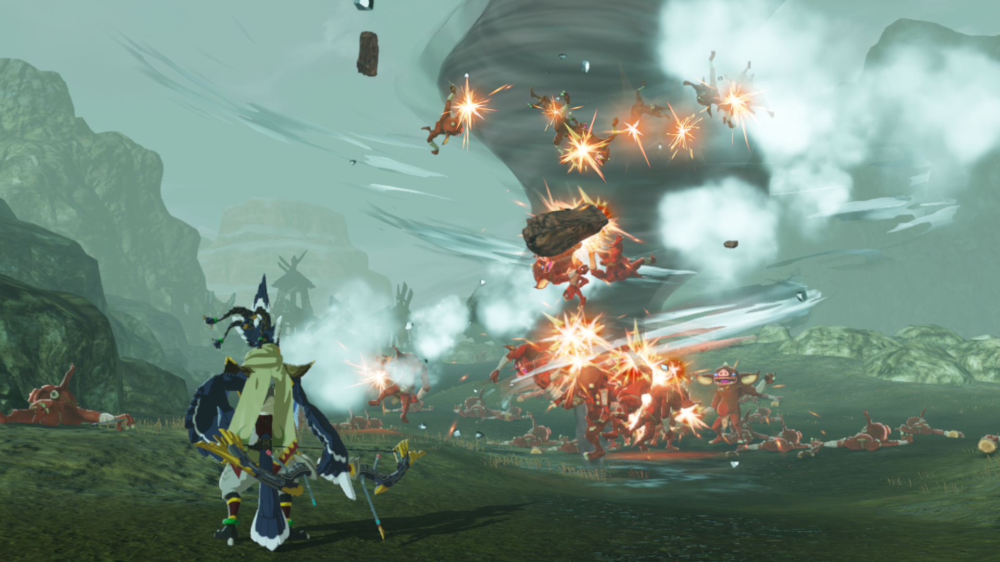

Hyrule Warriors: Age of Calamity is a hack and slash video game developed by Omega Force, published by Koei Tecmo in Japan and internationally by Nintendo for the Nintendo Switch. It was released on November 20, 2020.
The game is a successor to 2014's Hyrule Warriors, and similarly acts as a crossover mixing the characters and universe of Nintendo's The Legend of Zelda series with the gameplay of Koei Tecmo's Dynasty Warriors franchise. Unlike the first Hyrule Warriors, which was set in its own separate universe, Age of Calamity is part of the The Legend of Zelda canon, taking place 100 years before The Legend of Zelda: Breath of the Wild and depicting the Great Calamity, a war frequently mentioned in the original game. This makes Age of Calamity the first The Legend of Zelda game to act as a direct prequel to another entry in the series. In the story, Link and Princess Zelda must gather allies from all across Hyrule to fight the forces led by the evil Calamity Ganon, who is attempting to revive himself and destroy the kingdom.
Hyrule Warriors: Age of Calamity received positive reviews from critics, who praised its gameplay, varied character playstyles, amount of content, visuals, soundtrack, and characterization; the game's use of the assets and universe of Breath of the Wild was also lauded, with critics favorably singling out how it extended upon the original game's characters and backstory. However, some criticized the game for its technical issues, including heavy frame drops and certain aspects of the story. Within its first four days, the game shipped over 3 million copies worldwide, making it the single best-selling game in the entire Warriors franchise.
Age of Calamity holds a score of 78 out of 100 onreview aggregator Metacritic, indicating generally favorable reviews.
Four reviewers for Famitsu gave the game a total score of 36/40, the second highest score for a 2020 Switch game at that point of the year (with Animal Crossing: New Horizons receiving 38/40 in March). TJ Denzer of Shacknews gave the game a 9/10 rating, giving high praise to the gameplay, differences between character playstyles, and story; they called Age of Calamity the most fleshed out and well-crafted [Dynasty Warriors-style] game I have ever seen. They claimed that the game expands upon [Breath of the Wild] masterfully in both the iconic battle locations of the game and the soundtrack that accompanies them
Plot
Age of Calamity is set 100 years before the events of The Legend of Zelda: Breath of the Wild, in an alternate timeline. The story depicts the Great Calamity, a great war previously alluded to in Breath of the Wild between the armies of Hyrule and the forces of Calamity Ganon that resulted in the collapse of the kingdom.
During the Great Calamity, a small Guardian awakens within Hyrule Castle. Seeing the destruction being caused, it escapes through a time portal, followed unbeknownst by a portion of Calamity's Ganon's Malice. Arriving before the Calamity began, the Guardian is found by Link during battle. When it uses Impa's Sheikah Slate to raise a Sheikah Tower, they take it to engineers Purah and Robbie for study, learning it came from a future in which Ganon reawakens. Being informed of this, King Rhoam sends Link and Zelda to meet with the four candidates selected to pilot the Divine Beasts – Mipha, Daruk, Urbosa, and Revali.
With the Champions assembled, King Rhoam commands them to find a knight able to wield the Master Sword, which rests in Korok Forest. There, they encounter a dark prophet named Astor who seeks to revive and control Calamity Ganon, but Link draws the Master Sword and forces Astor to withdraw. With Purah's research revealing the presence of other towers hidden underground, the Champions set out to activate the towers and in turn using the maps provided by said towers to lead a preemptive strike on the Yiga Clan hideout. Learning from the Guardian's records that Calamity Ganon will return on Zelda's birthday, King Rhoam sends her for training in hopes of awakening her sealing magic in time, while deploying the Divine Beasts to prepare for the Calamity's impending return.
As Robbie and Purah finish analyzing the Guardian's memory, they are captured by Yiga spies, but the Guardian escapes with the Sheikah Slate and delivers it to Zelda just as the Calamity arrives. As Link, Zelda, and Impa retreat from the castle, King Rhoam seemingly sacrifices himself to cover their escape. With Calamity Ganon emerging from the castle, Impa shows Zelda the Sheikah Slate, revealing that Ganon had taken over the Divine Beasts in the other timeline. Believing the same is happening to them as well, the group moves out to aid the rest of the champions. Meanwhile, Mipha, Daruk, Urbosa and Revali are about to be killed by Calamity Ganon's Blights as in the original timeline, but Sidon, Yunobo, Riju and Teba appear from the future via time portals created by the Guardian, buying enough time for Link and his allies to help defeat the Blights. With the Champions saved and the Divine Beasts at their disposal, they begin to help reclaim Hyrule and clear the way to Hyrule Castle. Astor, aware of the change in the current situation, kills many of the Yiga Clan and uses their life force to revive the Blights. When Link is cornered by the Blights, Zelda moves to defend him, finally awakening her sealing magic and forcing Astor to retreat. The Yiga Clan defect to Zelda's side, seeking revenge against Astor. The group also discover King Rhoam survived thanks to a special relic he confiscated from Zelda earlier, and the two subsequently reconcile.
With their allies gathered, Purah uses the Sheikah towers to transport them all outside of Hyrule Castle and begins their final battle against Calamity Ganon. Although the Divine Beasts weaken Ganon's spirit form, Astor arrives along with Harbinger Ganon, the small Guardian from the current timeline infected with the Malice that came back from the future, only to be defeated by Link, Zelda, and the Champions. Astor attempts to summon Calamity Ganon to destroy them, but is instead consumed as Harbinger Ganon manifests itself into Calamity Ganon. Calamity Ganon corrupts the little guardian and turns it against the group, forcing Link to fight it. Upon its defeat, Zelda remembers she activated the little Guardian as a child, naming it Terrako, before her father took it away so she would focus more on her training. Zelda and her allies march towards Hyrule Castle and confront Calamity Ganon, but are unable to damage him until Terrako uses the last of its strength to self-destruct, weakening Calamity Ganon. Now vulnerable, Calamity Ganon is defeated by Link, and Zelda uses her power to seal the Calamity once and for all. With Calamity Ganon defeated, the future heroes are returned to their time while Link, Zelda and their allies look out at the now peaceful Hyrule. In a secret ending, Purah and Robbie repair Terrako, reuniting Zelda with her old friend.
Gameplay
Like the previous Hyrule Warriors game, Age of Calamity mixes the hack-and-slash gameplay of Koei Tecmo's Dynasty Warriors series of video games with settings, characters, and other elements from Nintendo's The Legend of Zelda series. The basic gameplay is participating in large-scale battles against enemies, while also completing objectives, and taking strategic actions such as capturing bases and commanding troops.

Screenshot from the game (source: shacknews)
In addition to retaining the combat, material crafting, and weapon-upgrade systems from Hyrule Warriors, the game incorporates environmental puzzle solving and the use of the Sheikah Slate tool and paraglider from Breath of the Wild. Players can upgrade their characters, complete missions and challenges, use resources to access new areas, build weapons, and cook foods that can be used as buffs. Weapons in this game are invulnerable and won't break over time, unlike in Breath of the Wild. The game's map is similar to the one for Breath of the Wild. Players can choose stages from it and use the Sheikah Tower to explore between regions. The game features 18 playable characters; 14 are obtained via progression in the main story, while four can be unlocked by completing various side quests. Besides the characters, players are also able to control the gigantic Divine Beasts to destroy large numbers of enemies.
While the core gameplay loop remains the same throughout Age of Calamity’s extended game time, I never grew tired of it. I found myself switching through characters a lot, making sure that everyone was leveled up and had strong weapons. There’s some good depth to combat prep here, as the game lets you collect a variety of weapons with different strengths. One broad sword might bolster your defense, while another might gift you more rupees after a successful mission. These effects can be mixed and matched as you fuse weapons together and level them up.
The game also features compatibility with Nintendo's amiibo figures, with figures of the Four Champions re-releasing alongside the game.
Development
Age of Calamity was revealed in a trailer that was released on September 8, 2020, presented by Zelda series producer Eiji Aonuma and Koei Tecmo producer Yosuke Hayashi. The game features the same art assets as Breath of the Wild, but uses the more combat-focused gameplay style of the previous Hyrule Warriors game. More information was revealed at the Tokyo Game Show on September 26.
The game came into reality with the idea of Breath of the Wild’s director Hidemaro Fujibayashi and art director Satoru Takizawa who pitched it to Aonuma, who liked the idea and after discussions, Aonuma approached Hayashi, a producer from Koei Tecmo, to make a new Hyrule Warriors about the events of the Great Calamity, which were not properly shown in Breath of the Wild. Aonuma felt that the battles would complement well with the style of a Warriors game. Nintendo's Zelda developers worked more closely with the development team at Koei Tecmo than on Hyrule Warriors, providing advisement and assistance with gameplay, graphics, world, and dialogue.
During Nintendo Treehouse Live gameplay presentation on October 7, Nintendo stated that the game will explore more backstories and relationships between characters, aspects that were not thoroughly examined in Breath of the Wild. At the end of that month, the demo became available to download from the Nintendo eShop, which includes the first chapter of the game. Kotaku noted from the demo that the game felt more connected to Breath of the Wild than to a Warriors title.
A multilingual open-collaborative online encyclopedia created and maintained by a community of volunteer editors using a wiki-based editing system. Featuring no advertisements, it is hosted by the Wikimedia Foundation, an American non-profit organization funded primarily through donations.